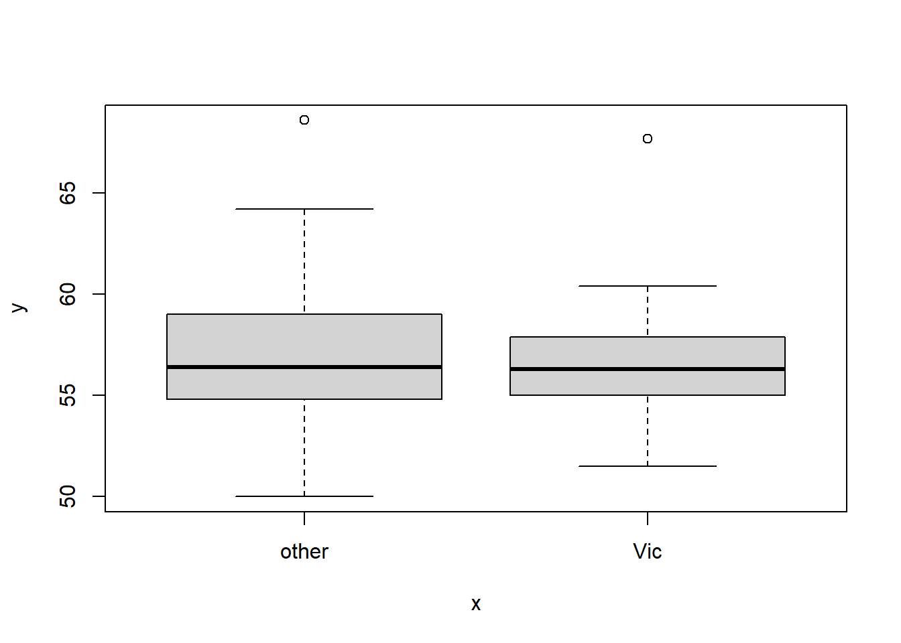

df <- read.csv('possum.csv')
head(df)
#> site pop sex age headL skullW totalL tailL
#> 1 1 Vic m 8 94.1 60.4 89.0 36.0
#> 2 1 Vic f 6 92.5 57.6 91.5 36.5
#> 3 1 Vic f 6 94.0 60.0 95.5 39.0
#> 4 1 Vic f 6 93.2 57.1 92.0 38.0
#> 5 1 Vic f 2 91.5 56.3 85.5 36.0
#> 6 1 Vic f 1 93.1 54.8 90.5 35.52 Basics
2.1 Data structure
A dataset is a collection of values. Values are organized in two ways. Every value belongs to a variable and an observation.
Definition 2.1 (Variables and Observations [1])
- A variable contains all values that measure the same underlying attribute (like height, temperature, duration) across units.
- An observation contains all values measured on the same unit (like a person, or a day, or a race) across attributes.
Definition 2.2 (Quantitative and Qualitative [2])
- Quantitative data are observations measured on a naturally occurring numerical scale. It is also called numerical data.
- Qualitative data are nonnumerical data that can only be classified into one of a group of categories. It is also called categorical data.
Definition 2.3 (Discrete and Continuous)
- Discrete random variable: A random variable that assumes either a finite number of values or an infinite sequence of values such as 0, 1, 2…
- Continuous random variable: A random variable that may assume any numerical value in an interval or collection of intervals.
Random variables
A variable in a dataset can be modeled by a random variable. The probability density function / probability mass function of the random variable can describe the distribution of all possible values of the variable in a dataset.
Then to make a mearuement is the same as to take a sample from the random variable.
2.2 Data Visualization
2.2.1 Qualitative (categorical) data
Usually the most important is the class relative frequency: \[ \text{class relative frequency}=\frac{\text{class frequency}}{n}. \]
To display it, we could use table, bar chart or pie chart.
Example: Possums
All the example about possums below come from the dataset here.
We first compute the frequency table of the variable pop:
table(df$pop)
#>
#> other Vic
#> 58 46or relative frequency talbe:
table(df$pop)/length(df$pop)
#>
#> other Vic
#> 0.5576923 0.4423077Then we could draw the barplot of this variable:
barplot(table(df$pop))and the pie plot:
pie(table(df$pop))Note that table is handling the statistics, while barplot and pie draw on top of the result from table.
import pandas as pd
df = pd.read_csv("possum.csv")
df.head()
#> site pop sex age headL skullW totalL tailL
#> 0 1 Vic m 8.0 94.1 60.4 89.0 36.0
#> 1 1 Vic f 6.0 92.5 57.6 91.5 36.5
#> 2 1 Vic f 6.0 94.0 60.0 95.5 39.0
#> 3 1 Vic f 6.0 93.2 57.1 92.0 38.0
#> 4 1 Vic f 2.0 91.5 56.3 85.5 36.0We first compute the frequency table of the variable pop:
df['pop'].value_counts()
#> pop
#> other 58
#> Vic 46
#> Name: count, dtype: int64or relative frequency talbe:
df['pop'].value_counts(normalize=True)
#> pop
#> other 0.557692
#> Vic 0.442308
#> Name: proportion, dtype: float64Then we could draw the barplot of this variable:
import matplotlib.pyplot as plt
vc = df['pop'].value_counts()
plt.bar(vc.index, vc)
and the pie plot:
_ = plt.pie(vc)Note that table is handling the statistics, while barplot and pie draw on top of the result from table.
2.2.2 Quantitative (numerical) data
We would like to use histogram to display these type of data. In other words, we split the range into small segments (called bins), and count the frequency or relative frequency of data falling into these bins.
Example: Possums
df <- read.csv('possum.csv')
head(df)
#> site pop sex age headL skullW totalL tailL
#> 1 1 Vic m 8 94.1 60.4 89.0 36.0
#> 2 1 Vic f 6 92.5 57.6 91.5 36.5
#> 3 1 Vic f 6 94.0 60.0 95.5 39.0
#> 4 1 Vic f 6 93.2 57.1 92.0 38.0
#> 5 1 Vic f 2 91.5 56.3 85.5 36.0
#> 6 1 Vic f 1 93.1 54.8 90.5 35.5We display the histogram of headL. We could use breaks to control the number of bins.
hist(df$headL, breaks=10)
The function hist does not just draw the histogram. It also provide many infomation we might need.
res <- hist(df$headL, breaks=10)res
#> $breaks
#> [1] 82 84 86 88 90 92 94 96 98 100 102 104
#>
#> $counts
#> [1] 1 6 2 12 22 27 22 7 3 0 2
#>
#> $density
#> [1] 0.004807692 0.028846154 0.009615385 0.057692308 0.105769231 0.129807692
#> [7] 0.105769231 0.033653846 0.014423077 0.000000000 0.009615385
#>
#> $mids
#> [1] 83 85 87 89 91 93 95 97 99 101 103
#>
#> $xname
#> [1] "df$headL"
#>
#> $equidist
#> [1] TRUE
#>
#> attr(,"class")
#> [1] "histogram"2.2.3 Some statistics
For a quantitative data, we would also like to compute some statistics: minx, max, quartiles, median and mean. In R, we could use summary to compute them, and use box plots to show them.
Example: Possums
summary(df)
#> site pop sex age
#> Min. :1.000 Length:104 Length:104 Min. :1.000
#> 1st Qu.:1.000 Class :character Class :character 1st Qu.:2.250
#> Median :3.000 Mode :character Mode :character Median :3.000
#> Mean :3.625 Mean :3.833
#> 3rd Qu.:6.000 3rd Qu.:5.000
#> Max. :7.000 Max. :9.000
#> NA's :2
#> headL skullW totalL tailL
#> Min. : 82.50 Min. :50.00 Min. :75.00 Min. :32.00
#> 1st Qu.: 90.67 1st Qu.:54.98 1st Qu.:84.00 1st Qu.:35.88
#> Median : 92.80 Median :56.35 Median :88.00 Median :37.00
#> Mean : 92.60 Mean :56.88 Mean :87.09 Mean :37.01
#> 3rd Qu.: 94.72 3rd Qu.:58.10 3rd Qu.:90.00 3rd Qu.:38.00
#> Max. :103.10 Max. :68.60 Max. :96.50 Max. :43.00
#> We could use the box plot to show these infomation. It consists of a box, two lines and possibly some points:
- The box in the box plot extends from the lower quartile to the upper quartile. The difference between the upper quartile and the lower quartile is called the inter-quartile range (IQR).
- The lines, known as whiskers, extends to one and a half times the interquartile range, but then they are limited to reaching actual data points.
- The points, considered as outliers, are those which are not covered by the box and the lines.
boxplot(df$headL)2.2.4 Relations among multiple variables
We could show the relation between two variables in a scatter plot.
Example: Possums
The cases that both variables are numerical continuous:
plot(df$headL, df$skullW)
The cases that one variable is categorical:
plot(as.factor(df$pop), df$skullW)Note that in this case, the categorical data has to be a factor. And once it is cast into a factor, the plot is multiple box plots for each category.
We can see pairwise plots for each pair of variables. Note that before the plot, we have to cast pop and sex into factors.
df$pop <- as.factor(df$pop)
df$sex <- as.factor(df$sex)
pairs(df)
Pair plot is very important since it can easily help us to find the expected relations between variables. We will use it a lot in regression analysis.
2.3 p
Definition 2.4 (Population) A population data set is a collection (or set) of data measured on all experimental units of interest to you. [2]
Definition 2.5 (Sample) A sample is a subset of data selected from a population. [2]
Definition 2.6 (random sample) A random sample of \(n\) experimental units is one selected from the population in such a way that every different sample of size \(n\) has an equal probability of selection. [2]
2.3.1 Inferential statistics
Definition 2.7 (Statistical inference [2])
- A statistical inference is an estimate, prediction, or some other generatlization about a population based on information contianed in a sample.
- A measure of reliability is a statement about the degree of uncertainty associated with a statistical inference.
Inferential statistics
- Identify population
- Identify variable(s)
- Collect sample data
- Inference about population based on sample
- Measure of reliability for inference